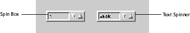

Spinner
The Spin Box class provides facilities for creating and manipulating spin boxes. A spin box is a control that allows a user to select a numeric value from a numeric range using increment/decrement buttons or an associated text item (see Figure 71). The application specifies a minimum value, a maximum value, and an increment value for the spin box. The value of the spin box remains within the specified range according to the specified increment. The text item for a spin box contains a character string representing the current value of the spin box. The user changes the value by editing the text item or by using the increment or decrement button. If the user enters a number out of range or another invalid entry (such as a non-numeric character), the spin box value changes to the closest matching value. The user is informed of invalid entries in some look-and-feel defined way.
A spin box can be a numeric spinner or a text spinner. A numeric spinner's text item is a string representation of the value of the spin box, as described previously. A subclass of the numeric spinner is the text spinner. A text spinner associates a list of character strings with the value of the spin box. The current value of the text spinner locates the position of a string in the list. This string is displayed in the text item. The user moves through the list of strings with the increment and decrement buttons or by typing a string directly into the text item. The list of strings for a text spinner is never displayed; the user must step through the list one string at a time to view all the available options.
A text spinner is useful for lists of strings familiar to a user, such as days of the week or months of the year. If you want the user to see the available choices, use a combination box, which contains a list item to display the available choices. Refer to the Combination Box class for more on combination boxes.
Figure 71. A spin box and a text spinner

CreateText creates a text spinner with a list of no strings. The minimum, maximum, and increment values of a text spinner cannot be directly modified. Minimum is always zero and represents the first string in the list of strings. Maximum is the number of strings in the list. Increment is always 1. Use AppendText to add a string to the list.
By default a text spinner sorts its list alphabetically. This may not always be desirable. (For example, days of the week are not normally sorted alphabetically.) To modify the sorting order, the application should subclass text spinner using GetTextClass and override the vspinnerCOMPARE method.
To retrieve the current value of a text spinner use GetText or GetValue. GetText returns the actual string indexed by the current value.GetValue returns the index into the list of strings (which is the current value). Given this index an application may use GetTextAt to retrieve the string, if necessary. Conversely, the application can retrieve the index into the list of strings for a given string with FindTextIndex.
For both spin box classes, SetValue sets the current selection. Typically a call to this routine is made to set the initial value or default value of a spin box.
At their bounds (the minimum/maximum values for numeric spinners, and start/end of the list of strings for text spinners), spinners may either wrap or block when using the increment/decrement buttons. Wrapping indicates that the spin box allows the user to go from a minimum value to a maximum value using the decrement key. To enable wrapping use SetWrap.
Using Spinners
Spin boxes use many of the methods of a ControlItem to control ranges and values. To set the numeric range and increment, useSetMin,SetMax, and SetIncrement. A change in value of a spinner results in a call to its notify function set with SetNotify. To retrieve the current value of a spinner use GetValue.
Table of Contents
Help Map
Need help? Contact Visix.